机器学习笔记
0. 机器学习概述
机器学习基本任务:
- 回归：
- 能解决分类、预测问题。
- eg. 年龄估计、表情分析
- 分类：
- 分类、识别、检测
- 聚类：
- 分割(图像、视频)、背景建模
- 数据挖掘、数据恢复
- 字典学习(视觉信息，文本)
- 表征：
- 特征提取(便于前三个任务解决)
- 数据重构
- 信息检索
方法分类(根据学习形式)
- 有监督学习
- 数据都有明确的标签，根据机器学习产生的模型可以将新数据分到一个明确的类或得到一个预测值。
- eg. 支持向量机、贝叶斯分类器、决策树、线性判别分析…….
- 无监督学习
- 数据没有标签，机器学习出的模型是从数据中提取出来的模式(提取决定性特征或者聚类等)
- eg. K均值、Meanshift、主成分分析、典型相关分析
- 半监督学习
- 部分数据有明确的标签，根据机器学习产生的模型可以将新数据分到一个明确的类或得到一个预测值。
- eg. 图直推学习、超图直推学习……
数据划分
- 训练集：用来训练模型或确定模型参数。
- 测试集：测试已经训练好的模型的推广能力。
- 验证集(可选)：用来做模型选择，即做模型的最终优化及确定的。
误差与精度
- 误差：学习器的实际预测输出与 样本的真实输出之间的差异。
- 错误率：被错误分类的样本在总样本中的比例。
- 精度：被正确分类的样本在总样本中的比例，即1 – error rate。
- 训练误差：学习器在训练集上的误差。
- 经验误差：即训练误差
- 泛化误差：在新样本的误差，实际误差!
- 测试误差：学习器在测试集上的误差，用来近似泛化误差。
过拟合与欠拟合
- 过拟合(Overfitting): 为了得到一致假设而使假设变得过度严格。
- 欠拟合(Underfitting): 模型没有很好地捕捉到数据特征，不能够很好地拟合数据
数据集划分策略
- 数据集划分策略：利用测试集或验证集评估学习器的泛化 误差，进而进行模型优化与选择，避免 过拟合。
- 常见划分策略:
- 留出法
- 交叉验证法
- 自助法
- 数据集划分各子集之间不能有重合。
留出法- 直接将数据集D划分为两个互斥的集合，分别为训练集S与测试集T，即 D = S T， S T = 。
- 训练/测试集划分尽量保持数据一致性。
- 采用合理的采样，合理控制训练集与测试集比例。
- 多次使用留出法，重复进行试验评估，求均值，减少数据分布差异造成的偏差。
交叉验证法- n-折交叉验证法：数据集等 分为n份相互不重叠的子集，每次以其中1份子集作为 测试集，其余n-1份子集作为训练集，重复n次，直至所有子集都作为测试集进行过一次实验评估，最后返 回n次实验评估的平均结果。常见n取值2、5、10、20。
- 交叉验证是最常见数据集划分方法。
留一法- 特殊的交叉验证法，每个被划分的子集只有一个样本。
- 优点：训练集比例高，训练出来模型与用所有数据进行训练的模型相似度高。
- 缺点：评估开销大；测试集比例太低，模型调参不便。
自助法- 假设一个由m个样本组成数据集D，对其进行m次随机采样构造一个由m个样本组成新数据集D’, 由于m次随机采样可能会对D中部分样本重复采样，所以D’中有部分样本是完全相同，而D中 有部分样本是没有被采样到数据集D’中。因此我们可以把D中这部分没有被采样到样本D\D’构造测试集， 而D’作为训练集。
- 这种没被采样到样本在数据集D中比例一般占 25%~36.8%之间。
- 自助法通常用于数据集较小或难以有效划分训练/测试集情况。
性能度量
- 真正例TP 真反例TN 假正例FP 假反例FN
- (TP+FN)+(TN+FP) = P + N = 样本总数
- 均方误差：多用于度量学习器解决回归任务的性能。
- 错误率与精度：多用于评估分类任务的性能。
- 查准率、查全率与F1 ：
- 查准率：被正确分类的正例样本在被学习器分类为正例样本中所占的比例。
- 查全率：被正确分类的正例样本在正例样本中的比例。
- 查全率与查准率是一对相互矛盾的度量。
- ROC与AUC
- 二分类问题的性能度量：根据置信度对样本进行降序排序…
- 受试者工作特征(ROC)曲线
- AUC：ROC曲线下的面积
1. 线性回归
- 损失函数
- 平方损失函数
- 绝对损失函数
- 平均损失函数
单变量回归模型
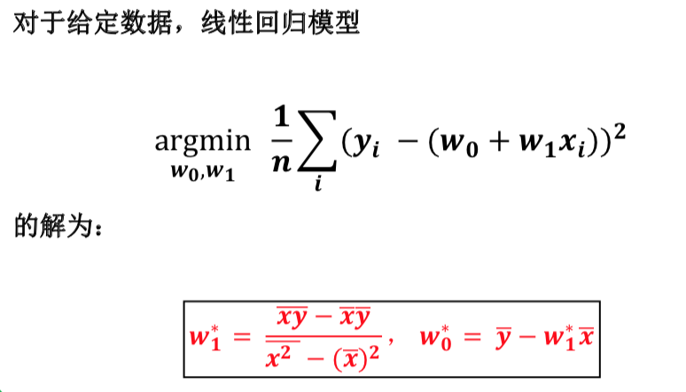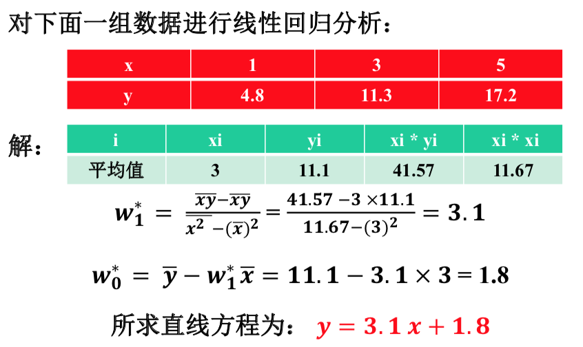多元线性回归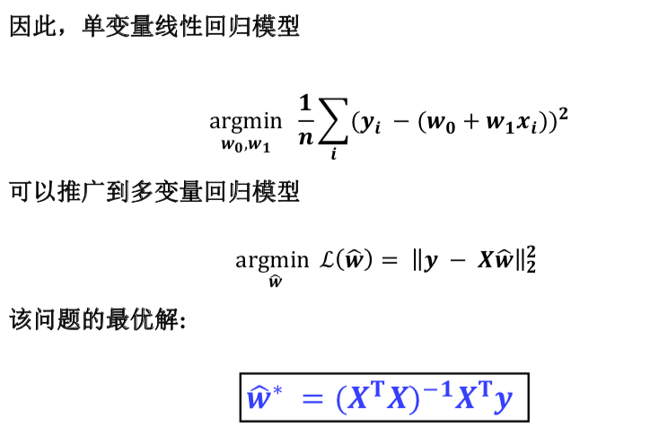 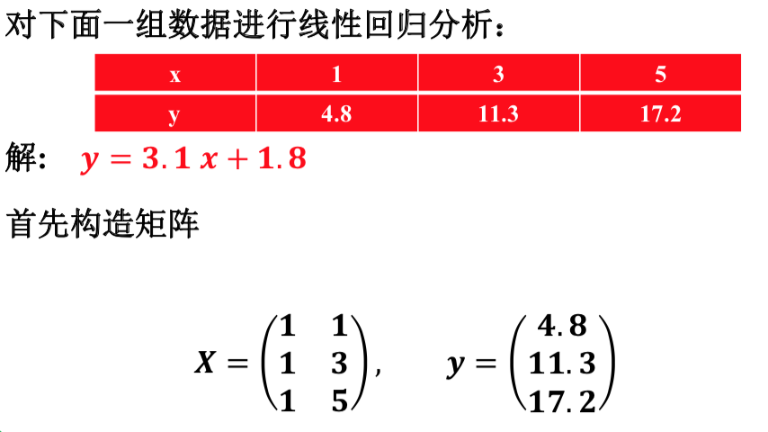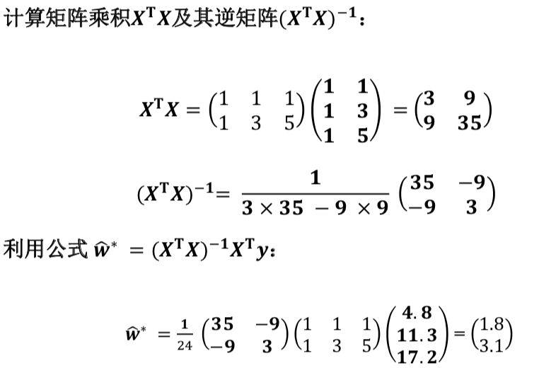- 概率解释
- 似然函数
- 极大似然法：令每个样本xi输出为yi的概率越大越好。
- 回归任务的思想：分析变量之间的关系
- 定义了损失函数来评估线性回归模型的好坏：平方损失函数、极大似然函数。
- 线性回归函数中两个参数的显示表达：最小二乘法(向量与矩阵形式)
- 线性回归算法可以对数据进行分析、预测。
- 线性回归的概率解释：极大似然法
2. 逻辑回归
- 逻辑回归与线性回归的区别与联系：
- 逻辑回归是用于解决二分类问题的机器学习方法。
- 线性回归要求因变量是连续性数值变量，逻辑回归要求因变量是分类型变量。
- 逻辑回归的损失函数：分类损失函数
- 求解无约束优化问题：
- 数值方法I：牛顿法 -> 方程求根问题 / 最小化问题
- 数值方法II：梯度下降法 yn是第n步下降时选取的步长，也称学习旅率。
- 掌握梯度下降法、牛顿法的基本原理与迭代公式： 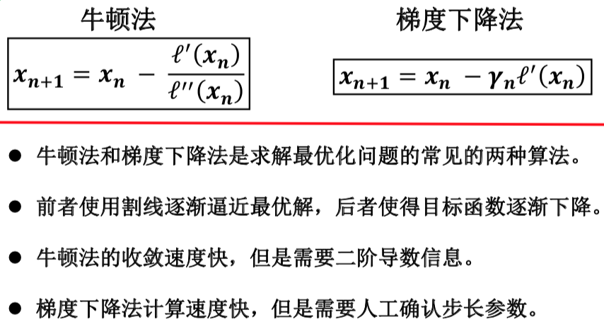
3. 决策树
- 决策树：构建一个基于属性的树形分类器。
- 每个非叶节点表示一个特征属性上的测试(分割)。
- 每个分支代表这个特征属性在某个值域上的输出。
- 每个叶节点存放一个类别。
- 使用决策树进行决策的过程：
- 从根节点开始，测试待分类项中相应的特征属性，并按照其值选择输出分支，直到到达叶子节点，将叶子节点存放的类别作为决策结果。
- 决策树构建：分治法思想(递归)
- 对于当前结点返回递归条件 / 递归结束条件:
- 当前结点样本均属于同一类别，无需划分。
- 当前属性集为空。
- 所有样本在当前属性集上取值相同，无法划分。
- 当前结点包含的样本集合为空，不能划分。
决策树的核心
- 定义最佳划分属性:
- 经过属性划分后，不同类样本被更好的分离。
- 理想情况:划分后样本被完美分类。即每个分支的样本都属于同一类。
- 实际情况:不可能完美划分。尽量使得每个分支某一类样本比例尽量高，即尽量提高划分后子集的纯度(purity)。
- 最佳划分属性目标:
- 提升划分后子集的纯度
- 降低划分后子集的不纯度
ID3决策树算法
- 我们希望决策树的分支节点所包含的样本尽可能属于同一类别，即结点的“纯度”越来越高。
- 纯度 ↑ = 确定性 ↑ = 信息量 ↓
信息熵：度量样本集合纯度最常用的一种指标。- 假定当前样本集合D中第k类样本所占的比例为pk(k = 1, 2, …, |y|)，则D的信息熵为： 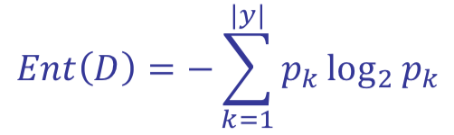
- 信息熵用来度量信息量，信息熵值越小，说明样本集的纯度越高。
- **
信息增益**： 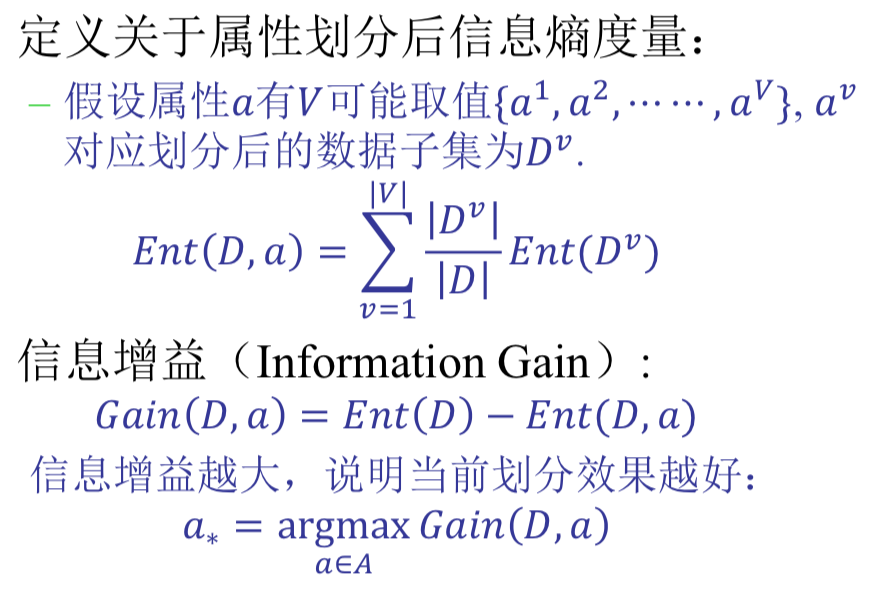 - ID3决策树算法：利用划分后的信息增量来判断属性划分的优劣性。
- 信息增益越大，说明当前划分效果越好。
- 信息增量准则对可取值数目较多的属性有所偏好。 eg. 每个学号因为只有一个样本，纯度都很高。
C4.5决策树算法
- **
增益率**：越大越好 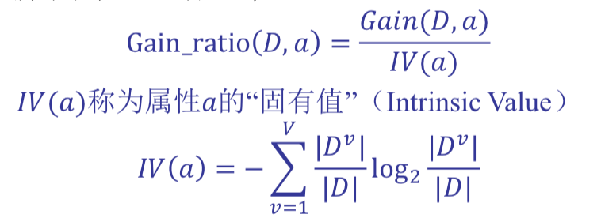 - 采用此新准则的方法称为C4.5决策树算法。
CART决策树算法
- **
基尼指数**：越小 -> 纯度越高 -> 越好 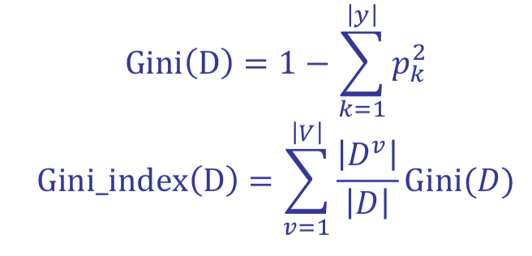
决策树的裁剪
- 剪枝处理：避免训练过拟合。
预剪枝：指在决策树生成过程中，对每个结点在划分前后进行估计，若当前结点划分不能提升决策树泛化性能，则进行裁剪，把结点标记为叶结点。- 优点: 减少属性划分与测试时间开销。
- 缺点: 可能造成欠拟合。
后剪枝：在生成一颗完整的决策树后，自底向上地对非叶结点进行考察，若将该结点对应的子树被替换为叶节点能提升决策树泛化能力，则进行裁剪。- 优点: 减少欠拟合风险。
- 缺点: 时间开销大。
思考
- 决策树ID3算法能不能进一步优化?
- 𝐺𝑎𝑖𝑛𝐷,𝑎 = 𝑬𝒏𝒕𝑫 − 𝐸𝑛𝑡𝐷,𝑎 减少开销
- 如何设计自己决策树算法?
- 设计自己的划分属性优劣性目标函数。
- 现有决策树框架的分类是否是全局最优?
- 决策树采用贪心法则，只得局部最优。
- 如何提升决策树算法框架的性能?
- 融入随机性，提升泛化能力，Eg.随机森林。
- 划分属性优劣度量(重点)
- ID3算法：信息增益
- C4.5算法：增益率
- CART算法：基尼指数
4. 感知机
感知机
- 感知机由两层神经元组成，输入层接受外界输入信号后传递给输出层，输出层是M-
本质上, M-P神经元 = 线性二分类器 - 感知机能容易地实现逻辑与、或、非运算。 P99(感知机不能解决异或这样的非线性可分问题)
- 感知机只有输出神经元进行激活函数处理，即只拥有一层功能神经元。
- 只能解决线性可分问题：存在一个线性超平面将他们分开，感知机的学习过程收敛。
- 否则感知机学习过程会发生振荡。
多层神经网络
- 非线性可分问题：多层功能神经元。
- 多层网络的权重优化法则：误差逆传播(简称BP)算法。
BP算法 P101
- 基于梯度下降策略，是一个迭代学习算法。
- 核心思想：利用前向传播，计算第 𝑛 层输出值。
- 优化目标：输出值和实际值的残差。(最小化训练集D上的累积误差)
- 计算方法：将残差按影响逐步传递回第 𝑛 −1, 𝑛 − 2, ⋯ , 2层，以修正各层参数。(即所谓的误差逆传播)
- 主要工具：链式法则(复合函数求偏导)。
- BP算法局限性
- 容易过拟合 -> 早停、正则化
- 容易陷入局部最优 -> 选取多次初值、随机梯度下降法
- 难以设置隐层个数 -> 试错法
5. 神经网络
- 神经网络: 神经网络是由具有适应性的简单单元组成的广泛并行互连的网络，它的组织能够模拟生物神经系统对真实世界物体所做的交互反应。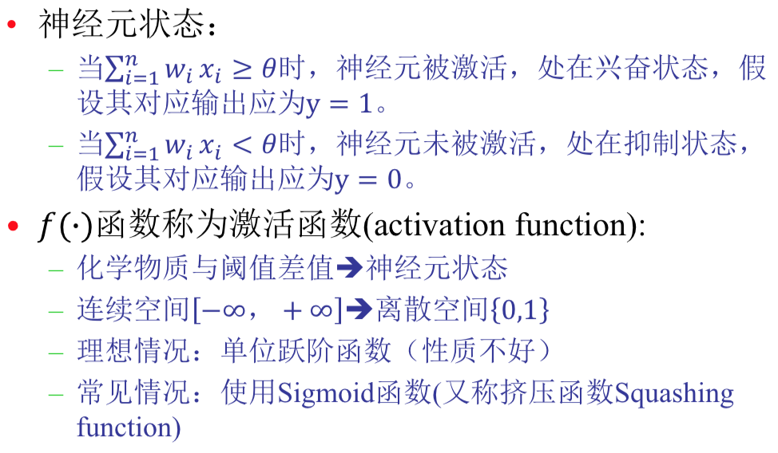
- Sigmoid函数 ≠ Logistic函数
- Logistic函数 ⊂ Sigmoid函数
6. 支持向量机(SVM模型)
支持向量机
- 离分类边界远的样本的置信度高，而离分类边界近的样本置信度低。
- SVM是一个凸的带不等式约束的凸二次规划问题
- 基本思想：寻找两类样本之间最中间的直线。
- 目的：使划分平面对于样本的扰动容忍性好。
- 对比：
- 逻辑回归算法是基于全部样本的二分类器：考虑全部样本的平均似然性。
- 支持向量机算法是基于部分样本的二分类器：考虑部分靠近边界的支持向量。
拉格朗日乘子法
- 拉格朗日乘子法：求解约束优化问题常用的方法之一。
- 基本思想：求解与之等价的无约束对偶问题。
- 较之原问题来说，对偶问题可能更方便求解。
- 较之原问题来说，对偶问题也可能更有意义。
- 原问题和对偶问题等价的充分必要条件被称作KKT条件
SVM对偶模型
- 可以利用拉格朗日乘子法得到SVM的对偶模型。
- 对偶模型更能反映该问题的特点，只有支持向量才对优化问题起作用。
- 求解对偶模型的比求解原问题简单，计算复杂度更低。
软间隔SVM
- 前面的讨论一直假定训练样本在样本空间或者特征空间中是线性可分的，即存在一个超平面能将不同的类的样本完全划分开。
- 在现实任务重很难确定合适的核函数使得训练集在特征空间中线性可分。
- 缓解该问题的一个办法是允许支持向量机在一些样本上出错。
- 硬间隔：要求所有样本均满足约束。
- 软间隔：允许某些样本不满足约束。在最大化间隔的同时，不满足约束的样本应该尽可能少。
- 软间隔SVM三种常见的替代损失函数：
- hinge损失
- 指数损失
- 对率损失
- 软间隔SVM可以对有outlier的数据分类。
- 软间隔SVM对偶模型与SVM对偶模型非常相似，可以用相同算法求解。
- 软间隔SVM模型可以看作是最小化hinge损失函数的正则化模型。
- 当参数C趋向无穷大时，软间隔SVM退化成普通的SVM。
SMO算法
- SMO的两个部分:
- 解析地求解两个变量二次规化问题。
- 启发式地选择变量。
- SMO小结
- 序列极小化优化算法(SMO)是求解SVM模型最高效的算法。
- SMO每次迭代解两个变量的二次优化问题，其最优解可以显式表达。
- SMO利用了启发式算法根据数据点违反KKT条件的大小选取需要迭代的变量。
非线性SVM / 核化SVM P126
- 核技巧是处理非线性分布数据处理问题最常见的方法之一。
- 核技巧最早出线在SVM模型中，随后在许多机器学习领域都有应用。。
- 核化SVM的效果主要取决于核函数的选取。
支持向量回归SVR P133
- 线性回归问题
- 寻找最佳直线(超平面)，使得预测值𝒇(𝒙𝒊 )和真实标签的均方误差尽量小。
- 支持向量机思想
- 寻找最佳直线(超平面)，使得数据点到直线的间隔尽可能的大。
7. K-均值(聚类)
聚类
- 聚类：根据某种相似性，把一组数据划分成若干个簇的过程。
- 难点一:相似性很难精准定义! 各种距离，度量学习。
- 难点二:可能存在的划分太多! 避免穷举，优化算法。
- 难点三: 若干个簇 = ? 预先给定，算法自适应。
K-means / K均值算法
- 聚类问题可以通过为每个簇簇的中心寻找合适的中心来实现。
- 假设每个簇的中心已经找到， 可以把所有数据点分配到距离它最近的中心所在的簇。
- K-means模型可能的划分数：非凸组合优化问题，NP-难
- 求解非凸组合优化问题的两种常见方法:
- 启发式方法: 一个基于直 观或经验构造的算法，在可接受的时间内下 给出待解决组合优化问题每一个实例的一个 可行解，该可行解与最优解的偏离程度一般不能被预计。
- 松弛方法: 对组合优化问题进行适当的松弛，将其转化为多项式时间内可解的优化问题，松弛后问题的解不是原组合优化问题的解，需要适当的后处理。
K-means模型的矩阵形式
- 对于任意一种划分都对应一个标准化示性矩阵 H(或均一化邻接矩阵 W )。
- 反之，任意一个标准化示性矩阵 H (或均一化邻接矩阵 W )都对应着一种划分。
- 本质上说，标准化示性矩阵 H(或均一化邻接矩阵 W ) 的引入并没有简化聚类问题的难度，但是为求解方法提供了更多的参考和选择。
Lloyd算法
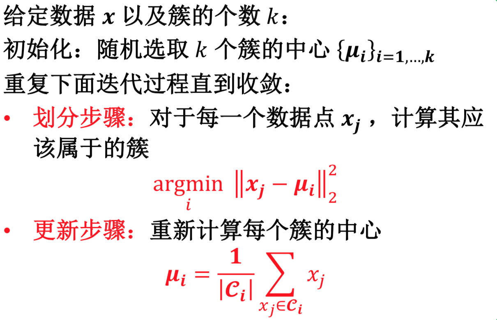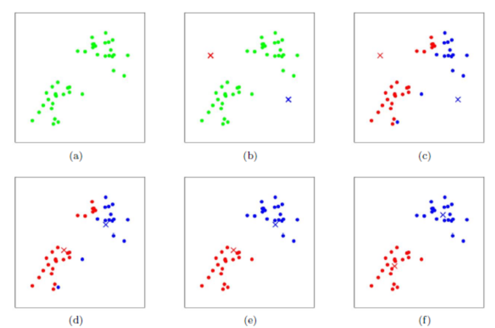
- 优势：
- Lloyd 算法属于EM算法(期望最大化)，可以保证收敛到K-means问题的局部最优解。
- Lloyd 算法的速度快，计算复杂度为O(nk)。
- Lloyd 算法思想简单，容易实现，可拓展性强。
- 劣势:
- 簇的个数k需要预先给定。
- 聚类结果依赖于初值的选取。
8. 谱聚类(聚类)
基本流程
- 输入: 数据矩阵 X，簇个数 k。
- 构建邻接矩阵W。
- 计算拉普拉斯矩阵L。
- 计算L最小k个特征值对应的特征向量U。
- 对U进行K-means聚类。
- 输出: k 个簇。
谱聚类和K-means的关系
- 相比直接进行K-means聚类，谱聚类有什么不同?
- 相当于先做了一次特征提取，再聚类。
- 谱聚类背后的机理是什么?
- 图论中的切割图问题。
9. 降维
降维
- 为什么要降维?
- 去除不相关的特征(去噪、特征提取)
- 储存与计算
- 可视化
- 数据本身具有低维特点
- 线性降维方法:
- PCA
- LDA
- SVD
- NMF
- 非线性降维方法:
- Kernel PCA
- Isomap
- MDS
主成分分析 PCA
思想: 假设降维的目的是解决维度灾难，在低维空间进行分类。那么我们希望降维后的样本保持
一定的可分性，即经过投影之后，同类样本的投 影点尽可能接近，异类样本的投影点尽可能远离。解决方案: 让投影后的类中心之间的距离尽可能大，从而增强样本的可分性。
- PCA: 最大可分性
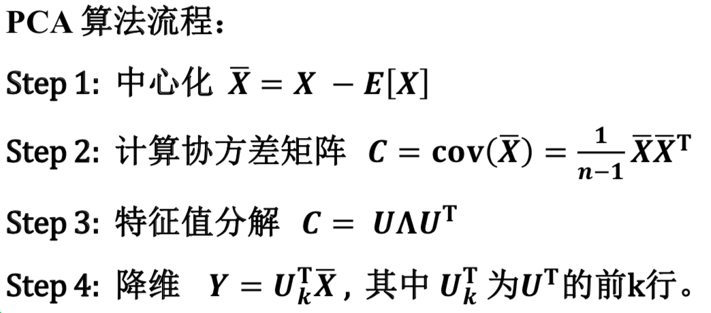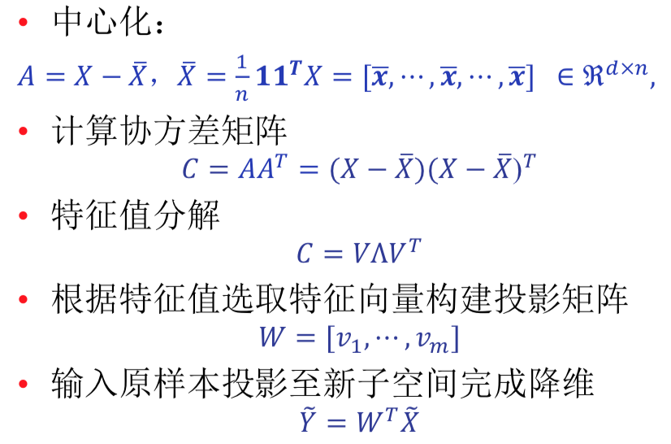 - PCA在考虑数据降维时候希望在新空间的信息越多 越好，即低维嵌入的方差(协方差矩阵的迹)越大。
- PCA是一个无监督降维方法，并没有运用任何有监督信息，这也是PCA算法一个弊端。
- 对于一个分类问题，保留信息越多分类效果一定 会更好么?
- 不一定，分类效果完全取决样本在新的子空间下的可区分度。
线性判别分析 LDA
- 对于二维数据来说，线性判别分析(Linear Discriminant Analysis)同时最大化类间散度矩阵，最小化类内散度矩阵。
- 目标函数通常被成为广义瑞利商，最优解为广义特征值问题。
- 可以构建拉格朗日函数 -> 𝓛对变量𝒘求偏导 -> 对偶问题
- 此模型的最优解有无穷多个(对最优解w进行任意缩放)。
- 如何定义聚合程度和扩散程度? 方差**(协方差矩阵)**
- 如何保证样本点尽量聚合？ 所有点接近中心点。
- 如何便于分类? 同类样本应具有较好的聚合度，而类别之间应该具有较好的扩散度。
- LDA算法流程： 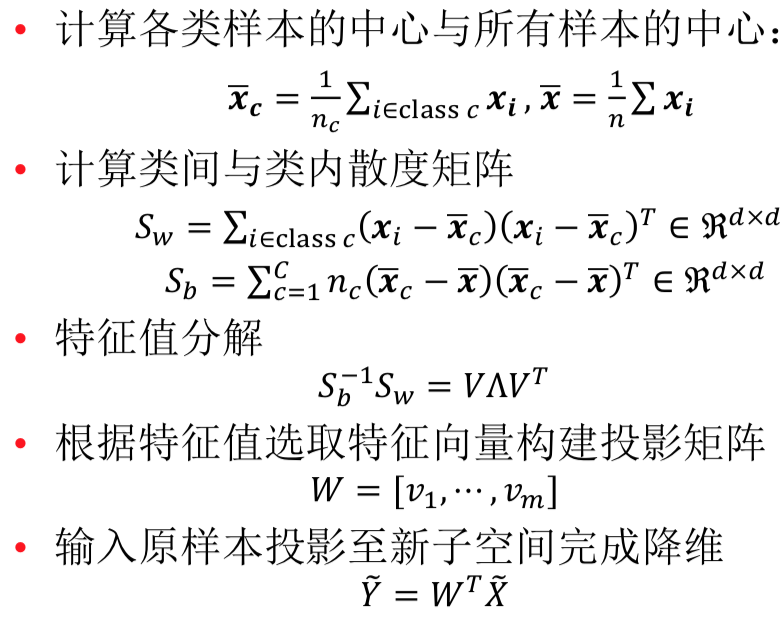
LDA vs PCA
- 相同点:
- 都属于降维方法。
- 都转化为求解特征值问题。
- 都可以使用核化技巧。
- 不同点:
- PCA是非监督降维，LDA是监督降维。
- PCA效率比LDA更高
- PCA旨在寻找一组子坐标系(定义一个子空间)使得样本点的方差最大，即信息量保留越多。LDA旨在寻找一组子坐标系(定义一个子空间)使得样本点类内散度越小，类间散度越大。
All articles in this blog are licensed under CC BY-NC-SA 4.0 unless stating additionally.